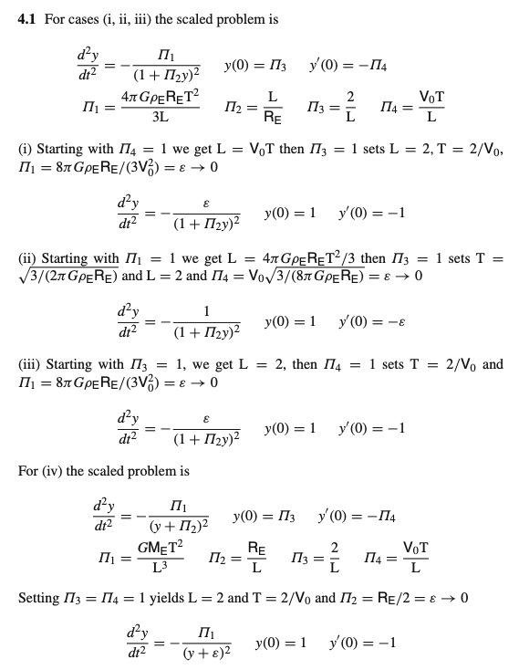

Q1 The bump lemma
Prove the following one-dimensional lemma, which was used in the derivation of the heat equation.
If \(\int_a^b g(x) \, \mathrm{d}x = 0\) for all \(a\) and \(b \in [0, 1]\), then \(g(x) \equiv 0\) for all \(x\in [0, 1]\).
Hint: think of a proof by contradiction.
Assume by contradiction that \(f(x) \neq 0\) between two arbitrary points, say \(x_0\) and \(x_1\), both in the interval \([a, b]\). Then \(\int_{x_0}^{x_1} f(x) \mathrm{d}x \neq 0\). This assumes some degree of smoothness and integrability (as long as \(f\) is not too pathological).
Q2. A source in the heat equation
\(\nextSection\)
Consider the same heat experiment discussed in sec-intro-PDEs but now consider a bar that has an internal source or sink generating or removing heat, such as the case of a boiler with an internal heating element. By adapting a similar derivation to the one presented, explain why the modified conservation of heat equation is \[
\frac{\mathrm{\partial}}{\mathrm{\partial}t} \int_a^b \rho c T \, \mathrm{d}x = q(x = a, t) - q(x = b, t) + \int_a^b R(x, t) \, \mathrm{d}x.
\]
In addition:
- By studying the dimensions of the other terms in the above equation, find what the dimensions of \(R\) are. What does \(R > 0\) mean and \(R < 0\)?
On the left, density has units kg/m^3, specific heat J/(kg K), and temperature K. But then dx has units of m. And d/dt has units of 1/s. So altogether, we have the following SI units on the left: \[
\frac{J}{m^2 \cdot s}
\]
So its energy per unit area per unit time. The reason why it’s per unit area is because you have not integrated over the sides of the cylinder/bar.
So therefore this needs to match the units on the right, which are [R] [dx]. So you conclude that \[
[R] = \frac{J}{m^3 \cdot s}
\] i.e. energy per unit time per unit volume. This is energy density.
R > 0 means heat is added into the system (source). R < 0 means heat is removed from the system (sink).
- Hence derive the partial differential equation that governs the temperature \(T\).
The derivation follows exactly as in the notes, except you have an additional term on the RHS. Use Fourier’s law to convert \(q = -k \partial T/\partial x\). Write everything under the integral and this yields: \[
\rho c \frac{\mathrm{\partial}T}{\mathrm{\partial}t} = k \frac{\mathrm{\partial}^2 T}{\mathrm{\partial}x^2} + R.
\]
- By introducing the appropriate scalings on each of the variables, \(x\), \(t\), and \(T\), non-dimensionalise the PDE and discuss the non-dimensional parameters (there will be two).
Same derivation as in the notes. Let \[
x = L x', T = [T]T' \quad \text{and} \quad t = [t]t'.
\] This time you will remember to scale out the typical source strength, so \[
R = [R]R'.
\]
This leads to \[
\frac{\mathrm{\partial}T'}{\mathrm{\partial}t'}
= \left(\frac{k[t]}{L^2 \rho c}\right) \frac{\mathrm{\partial}^2 T'}{\mathrm{\partial}x'^2} + \left(\frac{[R][t]}{\rho c [T]}\right)R'.
\] So this gives the two sets of non-dimensional numbers
\[\begin{align}
\Pi_1 &= \frac{k[t]}{L^2 \rho c} \\
\Pi_2 &= \frac{[R][t]}{\rho c [T]}.
\end{align}\]
If you want, you can write it in the alternative form by taking the time scaling to be \([t] = L/U\), where \(U\) is some unspecified velocity scale.
For the interpretation, you can simply take \(\Pi_1\) to be a measure of diffusive effects (heat spreading out) and \(\Pi_2\) to be a measure of source strength. Note that this problem can be simplified even further by choosing the time scale so as to set \(\Pi_1 = 1\). If you do this, you will be left with a single non-dimensional parameter that balances diffusion with the strength of the source.
Q3. Choice of scalings
\(\nextSection\)
Consider the dimensional problem for the motion of a projectile launched from close to the surface of the Earth. The dimensional height of the projectile, \(y(t)\), is given by \[\begin{align}
\frac{\mathrm{d}^2 y}{\mathrm{d}t^2} &= - \frac{GM}{(R+y)^2}, \\
y(0) &= 2 \, \mathrm{m}, \\
y'(0) &= -V_0 \, \mathrm{m/s}.
\end{align}\] Assume that the Earth is spherical and of uniform density, with its mass given by \(M = (4/3) \pi R^3 \rho\). Non-dimensionalise the height using \(y = L \tilde{y}\) and time using \(t = T\tilde{t}\). Consider the following cases:
- \(R\) fixed, \(V_0 \to \infty\), \(\rho\) fixed;
- \(R\) fixed, \(V_0\) fixed, \(\rho \to \infty\);
- \(R\) fixed, \(V_0\) fixed, \(\rho \to 0\);
- \(R \to 0\), \(V_0\) fixed, \(M\) fixed.
This problem ended up a lot longer than expected. Nevertheless do at least of the few cases to get a feel.
For each case:
- Explain the physical interpretation of the limits.
- Very fast initial velocity
- Very heavy object
- Very light object
- Very small Earth radius
- Choose the scalings \(L\) and \(T\) to normalise as many terms as possible.
- Choose the scalings so that the time it takes for the projectile to fall should be finite for the given limit, and for the speed, acceleration, and initial height to be well behaved (finite).
- Write out the scaled problem and identify all remaining nondimensional parameters.
- Identify the limiting small parameter for each case. Write out the problem (leading-order problem) when the parameter is set to zero.
The solution for parts (b) to (d) is given below. The solution for part (e) is simply setting \(\epsilon = 0\) in each case.

Q4. The unique timescale in the heat equation
\(\nextSection\)
During our investigation of the heat equation, we found that it was possible to scale time so as to scale out the only non-dimensional parameter that appears in the PDE. As explained in lectures, the disappearance of all non-dimensional parameters is due to the fact that only a single sensible timescale exists.
By adjusting the boundary conditions, we may create a new problem involving heat flow where a unique ‘special’ timescale can no longer be chosen.
Consider a system where one side of the rod is heated in some periodic fashion, e.g. set the initial and boundary conditions to be \[\begin{align}
T(x, 0) &= T_0 \\
T(0, t) &= T_a \cos (\omega t), \\
T(L, t) &= T_b.
\end{align}\]
- What must the units of \(\omega\) be?
Note \(\omega t\) must be unitless. Therefore \([\omega] = 1/s\).
- Non-dimensionalise as usual and, without selecting the timescale, \([t]\), identify the key non-dimensional parameters that remain. Write a brief sentence to describe their physical interpretation.
This is exactly the same as in the above heat question. You will still obtain
\[
\frac{\mathrm{\partial}T'}{\mathrm{\partial}t'}
= \Pi_1 \frac{\mathrm{\partial}^2 T'}{\mathrm{\partial}x'^2}
\] where the non-dimensional parameters is the Peclet number introduced in lectures: \[
\Pi_1 = \left(\frac{k[t]}{L^2 \rho c}\right).
\]
The main difference is that now, your boundary conditions are \[
T'(0, t') = \Pi_3 \cos (\Pi_2 t') \quad \text{and} \quad
T'(1, t') = \Pi_4
\] where \[
\Pi_2 = \omega [t], \qquad \Pi_3 = \frac{T_a}{T_0}, \qquad Pi_4 = T_b/T_0.
\]
The scaling on the temperature was taken to be such that the final initial condition is set to unity: \[
T'(x', 0) = 1.
\]
- There are two sensible choices for setting the timescale, \([t]\). Identify the two choices and present the reduced set of equations in each case.
So there are now two ways of choosing the time scale. Either choose it to set \(\Pi_1 = 1\) or choose it to set \(\Pi_2 = 1\). In the former choice, you are choosing to set time according to the diffusive rate. In the latter, you are setting time according to how the boundary is heated.
Q5. Timescale in the surface energy
\(\nextSection\)
Take the basic zero-dimensional energy model studied in (Equation eq-heateq-earth) for the temperature of the troposphere: \[
c \frac{\mathrm{d}T}{\mathrm{d}t} = \frac{1}{4} Q(1 - a) - \sigma \gamma T^4.
\]
- Non-dimensionalise the model by choosing \(T = [T]T'\), \(t = [t]t'\), and \(Q = [Q]Q'\). Show that it is possible to select the scalings on the temperature and time so as to completely remove all constants from the problem when \(Q\) is assumed to be constant.
The question’s suggestion of setting \(Q = [Q]Q'\) was excessive since \(Q\) is just a constant in this case. So proceeding as usual:
Set in the scalings. This time it is easier to balance the right had-side first. \[
\frac{c[T]}{[t']}\frac{\mathrm{\partial}T'}{\mathrm{\partial}t'} = \left(\frac{Q(1-a)}{4}\right) - \left(\sigma \gamma [T]^4\right) T'^4.
\] So select the temperature scaling so that both coefficients on the RHS are equal. \[
[T] = \left(\frac{Q(1-a)}{4\sigma \gamma}\right)^{1/4}.
\] Now choose the time scaling also to match the LHS coefficient to the RHS coefficient. \[
c \frac{[T]}{[t]} = \sigma \gamma [T]^4 \Longrightarrow
[t] = \frac{c}{\sigma \gamma [T]^4}
\] Once you have done this, the equation transforms to the one given in part b.
- Thus, show that the analysis of the above equation is equivalent to studying \[
\frac{\mathrm{d}T}{\mathrm{d}t} = 1 - T^4,
\] where we have dropped the primes and assumed that the albedo is such that \(1 - a \neq 0\).
- From your choice of \([t]\), estimate the typical dimensional value using \(d \approx 10 \mathrm{km}\), \(\rho \approx 1 \mathrm{kg} \,\mathrm{m}^{-3}\), \(c_p \approx 10^3 \mathrm{J} \,\mathrm{kg}^{-1} \,\mathrm{K}^{-1}\).
Use a pocket calculator to verify your calculations and conclude that this time-scale is on the order of a month. What is the relevance of this approximation as it concerns the steady-state solution?
Below (Equation eq-heateq-earth), we defined \(C = \rho c_p d\). So the scaling on time is (put in the scaling for [T]): \[
[t] = \left(\frac{4}{(1-a)}\right)^{3/4} \left(\frac{C}{(\sigma \gamma)^{1/4} Q^{3/4}}\right).
\]
So we know that \(\sigma = 5.67 \times 10^{-8}\) J/(m^2 s K^4), \(Q = 1.38 \times 10^3\) J/(m^2 s). We can also calculate \[
C = \rho c_p d = 10^7 J/(K \cdot m^2).
\]
We can use \(\gamma = 1\) for an estimate. The right-most factor is \[
\frac{10^7}{(5.67 \times 10^{-8})^{1/4} (1.378 \times 10^3)^{3/4}} s = 2.88 \times 10^6 s
\]
If we use a = 0.3 then this gives a total of \[
[t] = 3.7 \times 2.88 \times 10^6 s.
\] To convert to days, note 1 day = 24 hours = 2460 minutes = 2460*60 seconds. This is then \[
[t] = \frac{1.65 \times 10^7}{8.64 \times 10^4} \text{days} = 0.19 \times 10^3 \text{days} = 190 \text{days}.
\] So on the order of 6 months. Any answer you get that’s roughly on the order of months sounds about right. This is the rough approximation of how long time-scale effects take to appear.